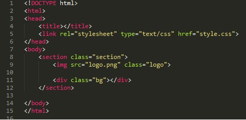

Рассмотрим сначала код html

Здесь важно отметить то, что мы не будем выставлять фон body, а фоновую картинку города выделим в отдельный блок с классом "bg". и блок "bg" и логотип мы помеoftv в тег section. Так же надо добавить то, что для того что бы логотип не отображался с белым фоном в виде квадрата, надо найти такую картинку, где будет специальный фон.
Теперь рассмотрим код CSS
Блок .section
- width: 100%; - ширина 100% относительно родительского элемента
- height: 100vh; - высота 100% высоты окна (1vh - 1% высоты окна)
- display: flex; - отображаем блоки в линию
- justify-content: center; - распределяем пространство вокруг блоков - по центру
- align-items: center; - Свойство align-items выравнивает флекс-элементы внутри контейнера в перпендикулярном направлении, в нашем случае по центру
- position: relative; - устанавливаем положение элемента относительно его исходного места. Это нужно для того что бы при увеличении картинки фона не появлялись скролы
- overflow: hidden; - скрываем скролы
Блок .logon
- width: 250px; - ширина 250 пикселей
- height: auto; - высота выщитывается автоматически после задания ширины
- z-index: 1; - позиционируем элемент первым, что бы он был выше фоновой картинки не смотря на то что фону дадим значение absolute
- transition: 2s; - указываем время перехода 2 секунды, т.е. при наведении мыши изменения будут не моментальны а в течении 2 секунд
Блок .bg
- position: absolute; - абсолютное позиционирование
- top: 0; - расстояние от верней границы элемента до верхней границы родительского элемента
- left: 0; - расстояние от лево границы элемента до левой границы родительского элемента
- width: 100%;, height: 100%; - ширина и высота 100% относительно родительского элемента
- background-image: url('siti.jpg'); - ссылка на фоновую картинку
- background-size: cover; - Масштабирует изображение с сохранением пропорций так, чтобы его ширина или высота равнялась ширине или высоте блока.
- filter: blur(10px); - применяем фильтр размытия в 10 пикселей
- transition: 2s; - время перехода 2 секунды
Блок .logo:hover
- filter: blur(8px); - при наведении к логотипу применится эффект размытия
- transform: scale(1.2); - при наведении размер картинки умножится на 1.2 т.е. увеличится на 20%
- opacity: 0.5; - при наведении прозрачность станет 0.5
Блок .logo:hover~.bg
Пара слов об "~" - этот элемент говорит о том что после наведения на класс logo стили будут применяться к соседнему классу bg. т.е. элемент ~ говорит о том что стили будут применяться ко всем соседним элементам, но так как мы указали к каким конкретно, то стили будут применяться только к bg
- filter: blur(0); - отменяется эффект размытия
- transform: scale(1.5); - при наведении размер картинки умножится на 1.5 т.е. увеличится на 50%